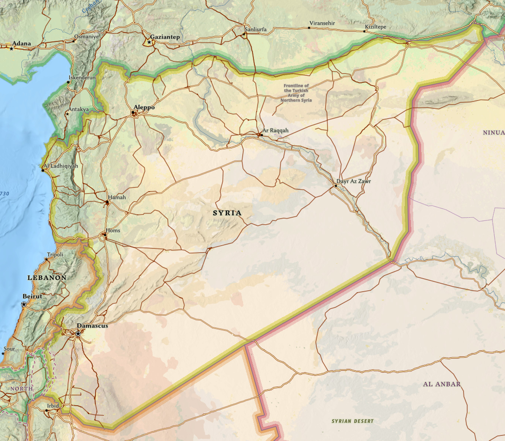

The Battle of Kadesh
c. 1274 BCE | Egypt | Hittites | Syria
One of the earliest battles described in tactical detail, Kadesh is often treated as the classic chariot battle of the Bronze Age and is tied to one of the earliest surviving peace treaties.